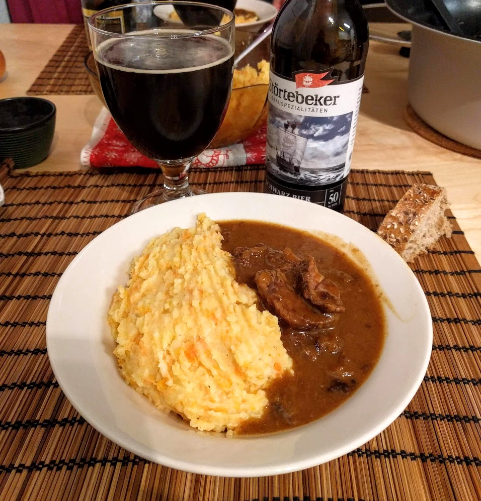

Carbonade flamande

Ici avec une purée de patates et carottes
Pour 6 personnes :
- 800g de bœuf maigre coupé en morceaux (paleron, hampe, bavette, macreuse...)
- 250g d'oignons
- 50g de beurre
- Une cuillère à soupe de moutarde
- 150g de pain d'épices
- 50cl de bière brune (Pelforth, Leffe)
- Une cuillère à soupe de cassonade
- Une cuillère à soupe de vinaigre
- Un bouquet garni (laurier, thym)
- Sel, poivre
- Faire fondre le beurre dans une cocotte, et lorsque c'est fait, faire dorer les morceaux de bœuf en les retirant au fur et à mesure. Saler et poivrer.
- Émincer les oignons, les faire revenir à la place de la viande jusqu'à ce qu'ils soient bien blonds. Puis, rajouter la cassonade, laisser caraméliser quelques instants, puis verser le vinaigrer et remuer rapidement.
- Remettre la viande dans la casserole en faisant des couches alternées oignons/viande (ça c'est de la théorie, en pratique tu t'en fiches, tu te contentes juste de tout mélanger comme un gros sac), en rajoutant le bouquet garni, la moutarde, encore un peu de sel et de poivre, émietter le pain d'épice par-dessus et enfin, recouvrir de bière. Couvrir et mettre au feu doux pendant trois bonnes heures.
- C'est prêt lorsque le dessus est mou, genre presque solide.
- Servir avec un truc léger genre des patates. Ou des petits pois si vraiment t'es un elfe.